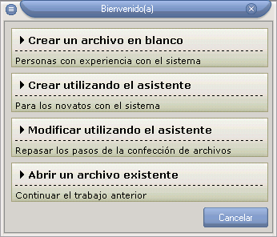

Bienvenido al sistema
Al iniciar la aplicación aparecerá la siguiente ventana:

Las diferentes opciones se describen a continuación:
Crear un archivo en blanco:
Cuando usted adquiera experiencia con el sistema puede comenzar creando un archivo de horarios en blanco.